🏙️ Explainable GeoAI for Urban Wildfire Structure Loss
Parastoo Farajpoor and Mohammadreza Narimani* (corresponding author)
Frontiers in Sustainability · Volume 7 · Article 1975724 · 7 October 2026 · Open access CC BY
Department of Biological and Agricultural Engineering · University of California, Davis
Urban Wildfire Structure Loss and Explainable GeoAI
Wind-driven fires that enter dense neighborhoods are not simply larger wildfires. Once buildings ignite, structures become fuel and fire can travel through the built fabric after the wildland flame front has passed. City-scale risk tools often look skillful under random train–test splits until they are evaluated in spatially separated blocks—exactly when planners need honest uncertainty.
For searches on Palisades Fire structure loss, urban wildfire GeoAI, building density wildfire risk, or spatial cross-validation wildfire, this page summarizes open-access research by Parastoo Farajpoor and corresponding author Mohammadreza Narimani (University of California, Davis). The January 2025 Palisades Fire analysis links 12,081 CAL FIRE Damage Inspection (DINS) records to pre-fire Sentinel-2 vegetation amount and moisture (NDVI/NDMI), Landsat land-surface temperature, LANDFIRE fuels, 10 m terrain, and a dated OpenStreetMap building/road layer.
Within inspected residential structures, 5,566 of 9,883 were destroyed. The modeling goal is neighborhood-scale screening—not parcel-level prediction. Logistic regression and gradient boosting are tuned under nested procedures and compared with both random and 1 km spatial-block cross-validation so that reported skill reflects geographic generalization.
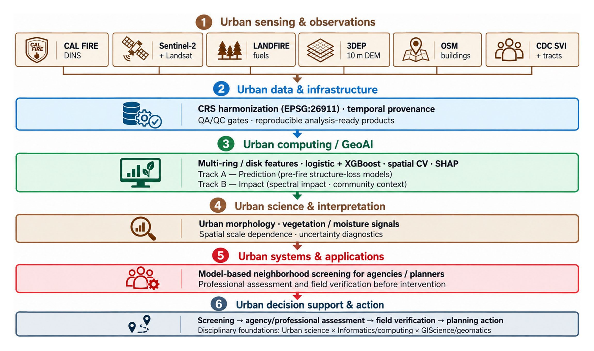
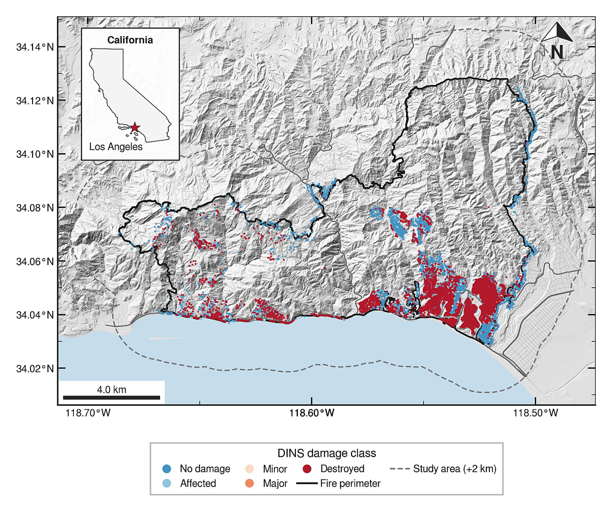
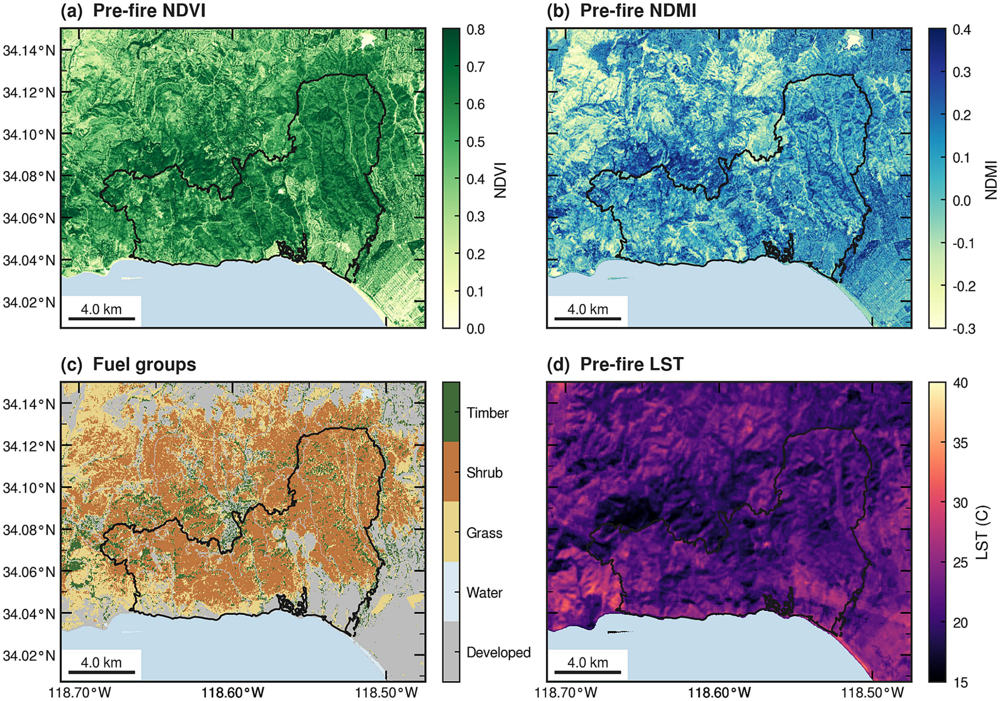
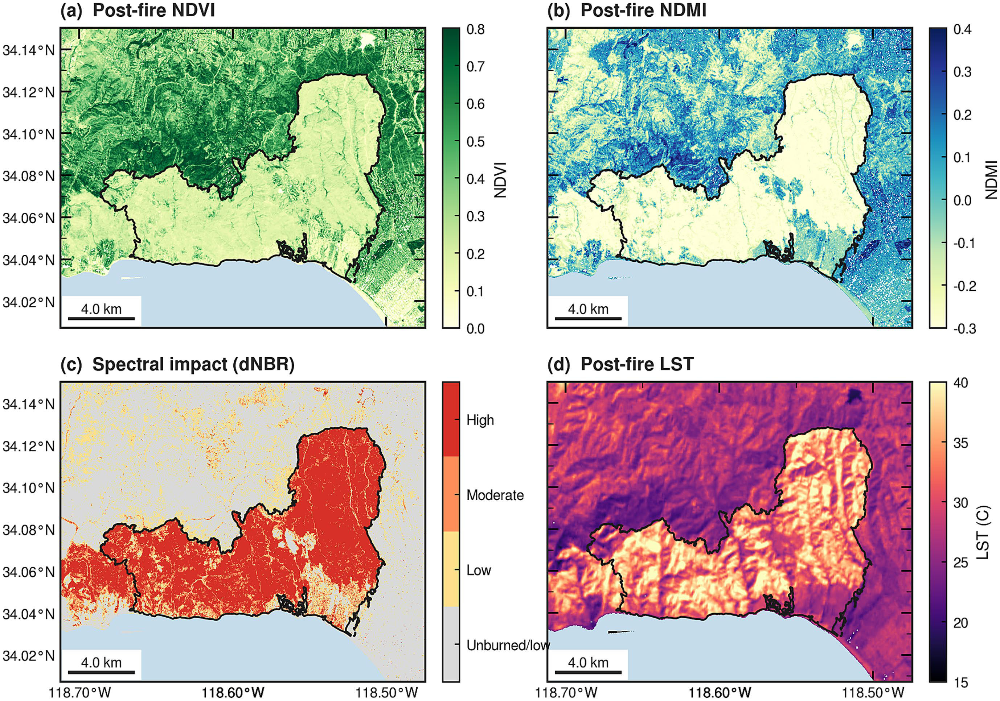
Building Density, NDMI Moisture, and Neighborhood Screening
Within inspected residential structures, neighborhood building count inside a 100 m-radius disk was the strongest predictor: conditional destruction odds rose 3.74-fold per standard deviation. That finding speaks directly to urban form—density and spacing—not only to wildland fuel maps.
Higher neighborhood NDMI (vegetation moisture) was associated with lower destruction odds. NDVI’s sign flipped depending on whether it was entered jointly or alone, so greenness-only risk maps can mislead. Neighborhood-scale features generally outperformed immediate-surrounding sets, though fold-level variability overlapped. SHAP rankings for XGBoost and odds ratios for logistic models provide complementary, interpretable summaries for GeoAI users who need transparent drivers.
Pre-fire predictor distributions by original DINS damage class (NDVI, NDMI, fuels, slope, spacing, building count, year built, wildland distance) show why multi-factor screening is necessary: no single satellite index separates destroyed from surviving homes cleanly across the Palisades footprint.
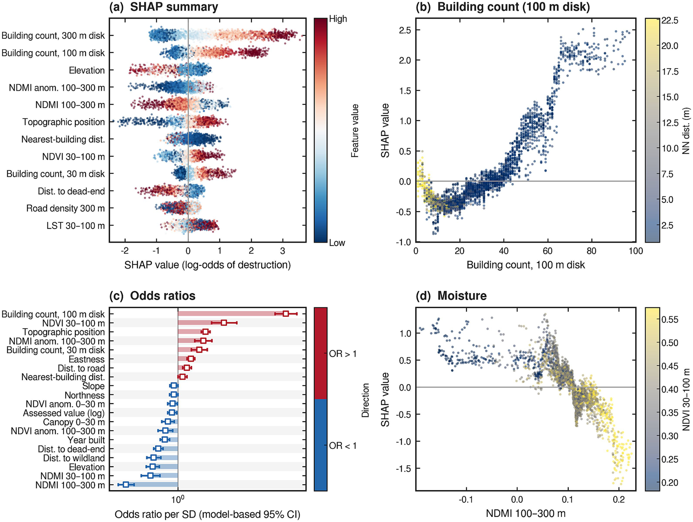
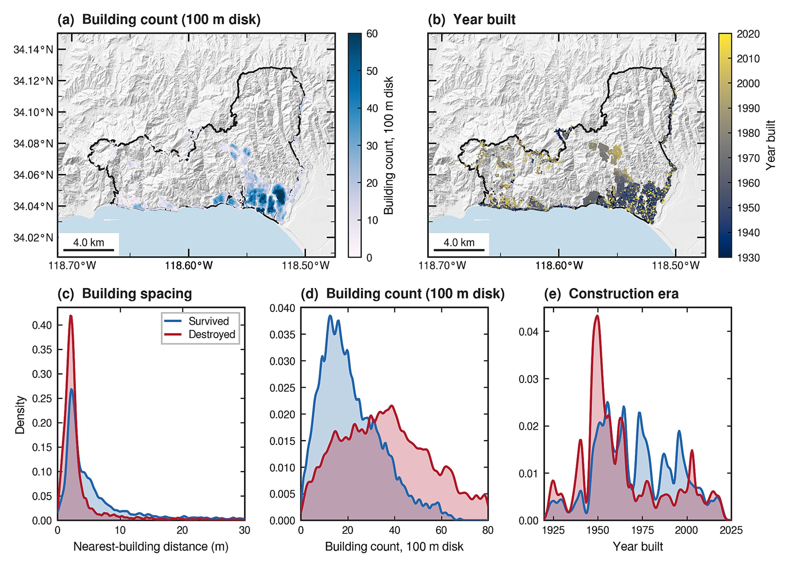
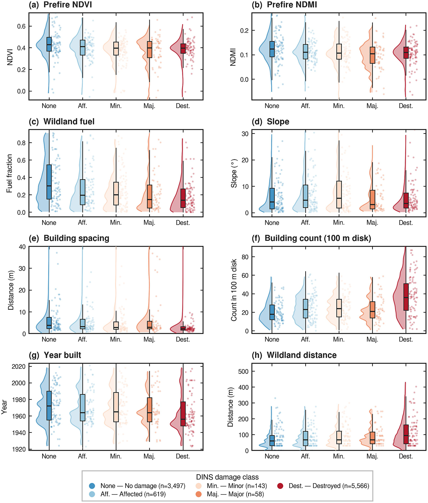
Spatial Cross-Validation Changes Reported Wildfire Skill
Random CV suggested excellent discrimination for the integrated gradient-boosting model (ROC-AUC 0.92). Spatial-block validation reduced that to 0.75. An interpretable logistic model reached a similar spatial AUC and had a calibration slope closer to one. Sensitivity checks on neighborhood support radius and block width further show that headline metrics move when spatial dependence is respected.
Post-fire dNBR and relative greenness versus 2022–2024 month-matched references provide spectral impact context but are not used as predictors of destruction. Tract-level residential destruction compared with CDC/ATSDR Social Vulnerability Index (SVI) 2022 adds community context for equity-aware interpretation—without claiming that SVI alone predicts parcel outcomes.
The paper therefore treats the workflow as a neighborhood-scale screening tool for urban wildfire structure loss, not a parcel-level prediction system. Applying coefficients to another fire still requires independent-event validation.
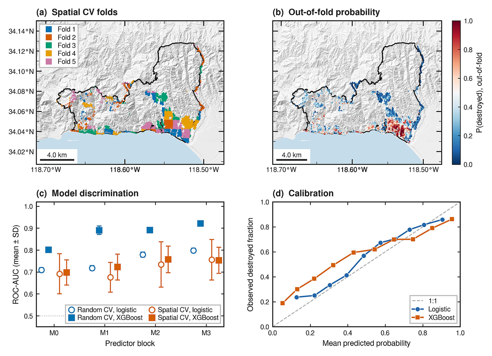
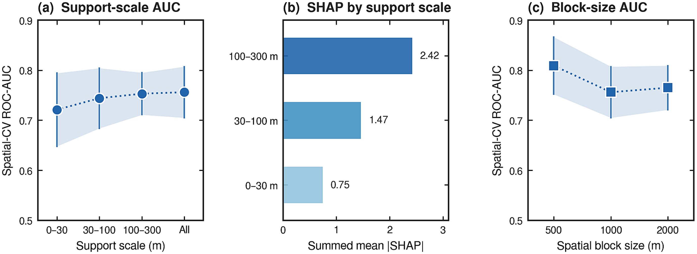
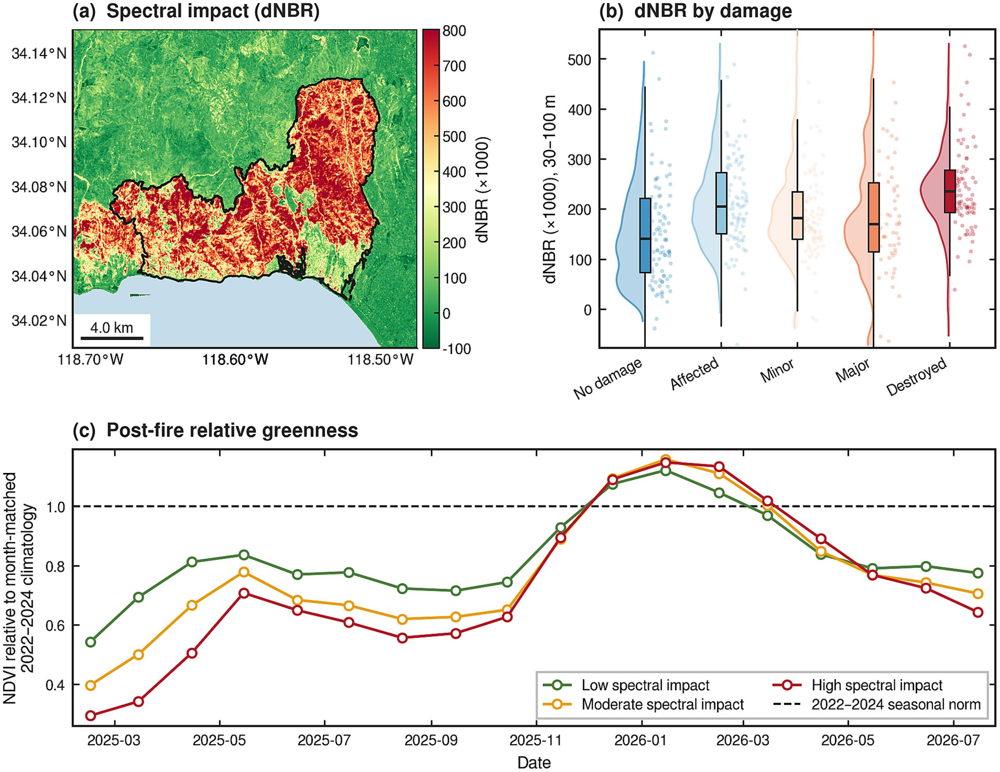
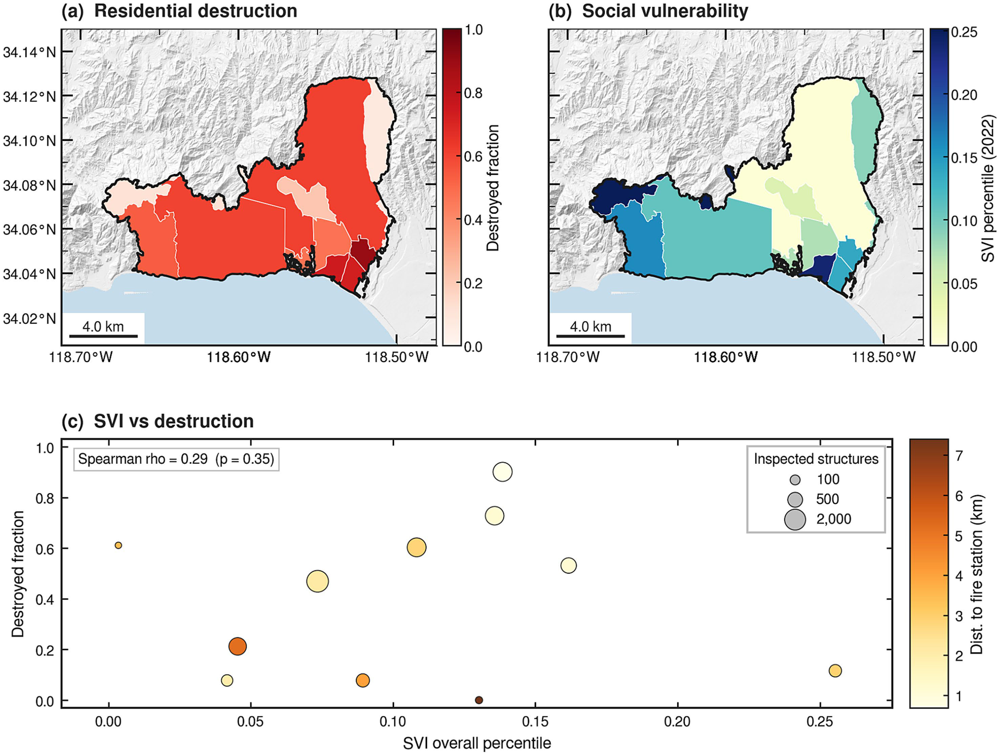
Paper and Citation
Farajpoor, P., & Narimani, M. (2026). Explainable GeoAI for urban wildfire structure loss: vegetation and built environment in the 2025 palisades fire. Frontiers in Sustainability, 7, 1975724.
DOI: 10.3389/frsus.2026.1975724 · Open access under CC BY 4.0
Please cite the publisher version when you use this work. The summary on this page is a research card, not a substitute for the article.
Contact
Mohammadreza Narimani
PhD Candidate, University of California, Davis